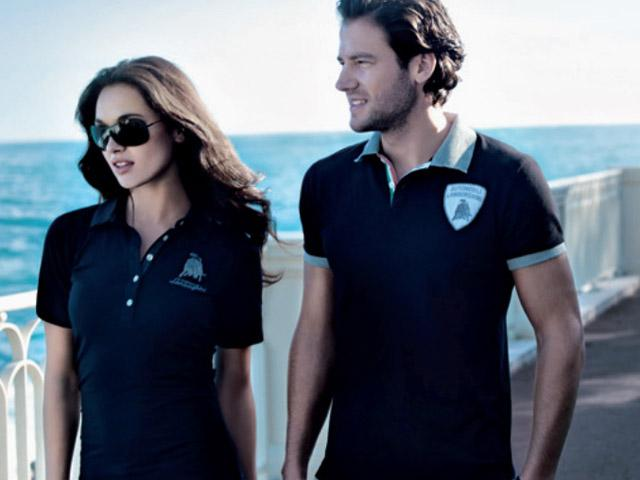
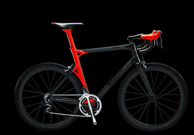
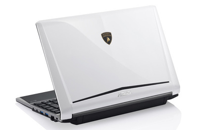
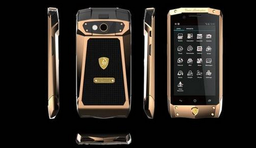

兰博基尼服饰
 兰博基尼汽车公司主席兼首席执行官史帝文·温科尔曼（Stephan Winkelmann）表示：“兰博基尼全球首家服饰概念店在中国的开业对兰博基尼来说是一个重要的里程碑，同时也说明了兰博基尼品牌在亚洲的强劲增长势头和市场需求。”作为全球顶级跑车制造商及欧洲奢侈品标志之一，兰博基尼兰博基尼服饰概念店一贯秉承将极致速度与时尚风格融为一体的品牌理念，不断创新并寻求全新品牌突破。此次涉足时装领域，将为兰博基尼品牌拥蹙者提供更加丰富多彩的品牌产品选择。落户中国的全球首家服饰概念店将为客人展示兰博基尼的全部系列，包括服装、配饰以及皮具、手机、电脑等，“纯粹、极致、不妥协”诠释了兰博基尼的品牌灵魂并将其延续在兰博基尼服饰品牌系列上，使其尊贵、奢华、商务的风范展现的淋漓尽致。北京华贸中心是一个汇集了全球各大奢侈品牌的国际化购物场所。兰博基尼服饰概念店开设在华贸中心内，由重庆泛东科技有限公司负责经营。
兰博基尼自行车
 兰博基尼和世界知名瑞士自行车品牌 BMC 合作推出了一款限量版公路自行车——BMC Lamborghini 50th Anniversary Edition Impec，全车身由碳纤维覆盖，车身材料则和兰博基尼旗下旗舰超级跑车 Aventador 选用的一样。BMC 是世界知名的自行车厂商，它的作品都在环法赛事上被顶级赛手使用。这一次，BMC 将会生产共计 50 件 Impec 顶级车架，每台均需定制开工生产，每台车架的造价就高达 20 万人民币，同时会对每台车型进行独一无二的喷漆设计。
兰博基尼电脑
 传奇兰博基尼超级跑车的美学，融入华硕创新和先进设计理念，创造而出的VX7拥有堪称经典的橙色兰博基尼跑车外观，皮革材质腕托设计凸显舒适的操控体验，i7四核处理器与GTX 460M显卡的性能配合1920×1080全高清屏幕，让你在影音、游戏等娱乐体验上倍感震撼。华硕兰博基尼VX7的车身有两种颜色：橙色和黑色。在“机器前盖”的中心处兰博基尼的斗牛Logo彰显了这辆车的与众不同。而以Logo为中心，我们可以感受到“机器前盖”有向下的坡度，而在“机器前盖”的两侧可以看到两条明显的凸起。这样的设计不但让VX7的“机器前盖”有着漂亮的流线，同时也让“机器前盖”与LED屏幕之间产生了一定的空间，可以有效的缓解外部压力对屏幕的损害。在VX7“机器前盖”的底部，我们可以看见一段用金属网做成的修饰条，这个装饰条与兰博基尼跑车上的侧翼出风口有着异曲同工之妙。VX7后部的两颗“尾灯”与“排气管道”让你一眼就认出它是兰博基尼，配合棱角分明的机身，让人不能低调。
兰博基尼手机
 兰博基尼手机机身是由金属、钻石、鳄鱼皮等材料组成。整部机身均采用了昂贵的材料，与奢华机品牌Vertu路线相同。安卓4.0手机兰博基尼T700曝光兰博基尼推出的这款智能手机的型号为T700，目前已知该机的触摸镜面采用了蓝宝石玻璃的材质，众所周知红蓝宝的莫氏硬度为9，仅次于钻石。处理器方面T700采用了高通的高速处理器，搭配2GB RAM，另外还支持LTE网络，并且运行Android 4.0系统。这部产品由兰博基尼自行研发生产或是找代工生产商、发售日期及价格还都是未知之数。但这部目前消息指出该机会有五种颜色选择，并且全球限量650 部。
©2017 年兰博基尼汽车有限公司版权所有。兰博基尼汽车有限公司是一家隶属奥迪集团的单一股东公司。保留所有权利。增值税号码：IT 00591801204 津ICP备15001327号 logo ICP京公网安备 11010502032604号